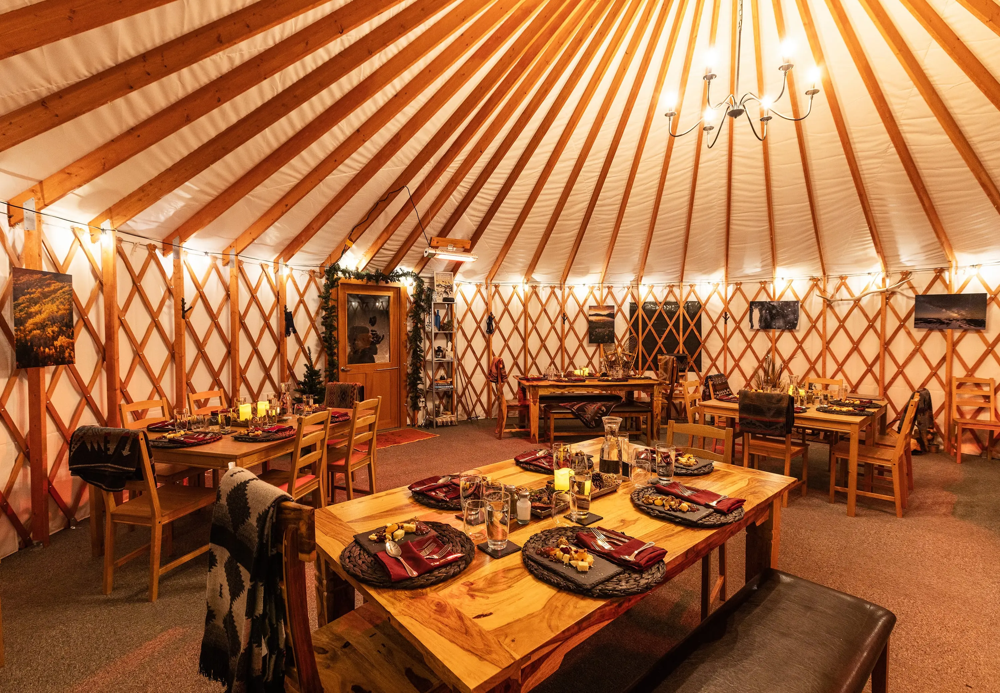

Mission
Serve flavour-packed Asian dishes that are fresh, quick and accessible for everyday customers.
GreenBite is a small business concept created for customers who want a modern, healthy, and affordable version of traditional Mongolian cuisine. The idea focuses on solving a real-world problem: fast food is often unhealthy, while healthier options tend to be expensive or take a long time to prepare. GreenBite aims to solve both of these issues at the same time.
The menu features a mix of classic Mongolian dishes such as buuz, tsuivan, khorkhog, and drinks like suutei tsai (milk tea) and airag (fermented mare’s milk), all prepared with lighter ingredients and fresh produce. With its quick and efficient modern service, the restaurant is highly appealing to local students, office workers, and families in the area.

Serve flavour-packed Asian dishes that are fresh, quick and accessible for everyday customers.
Become a trusted neighbourhood restaurant brand known for healthier fast-casual meals.
Freshness, consistency, friendly service, clear communication and customer convenience.
This prototype uses an embedded map as another multimedia component and helps potential customers understand the restaurant location.
Address: 30-34 Westmoreland St, Dublin 2, D02 HK35